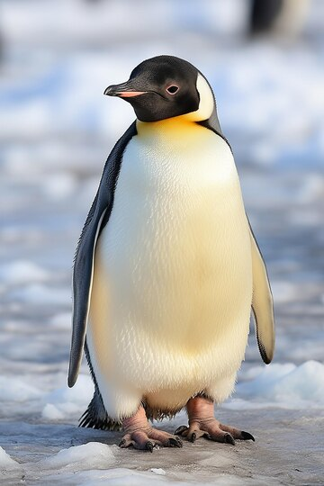
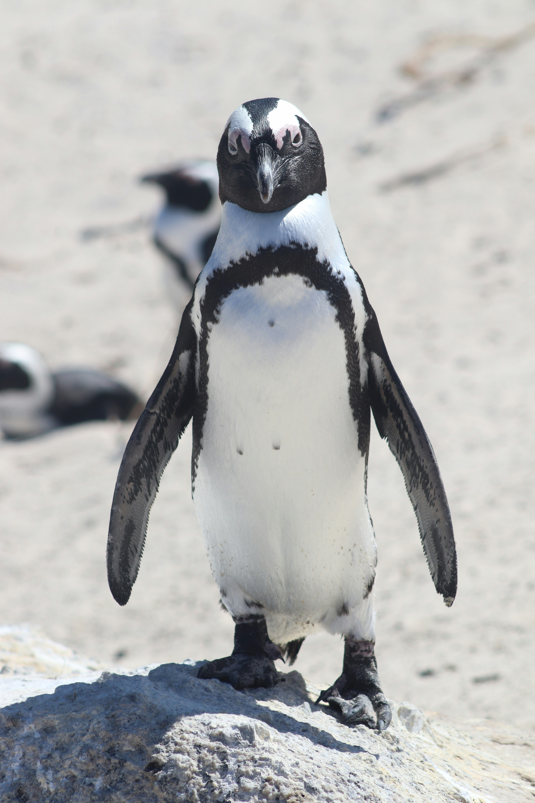
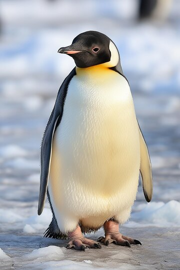
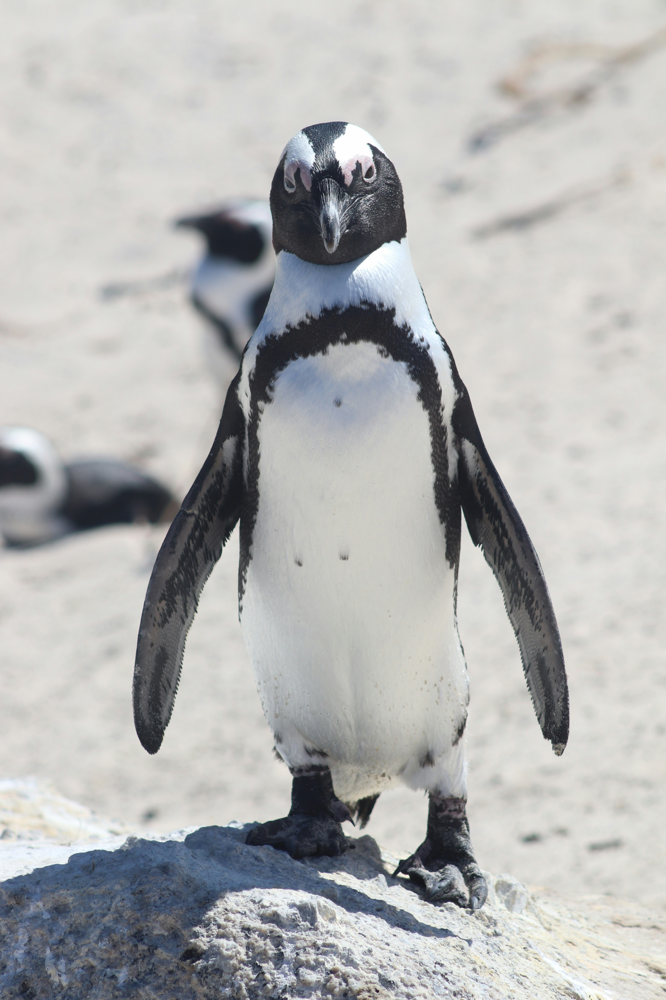
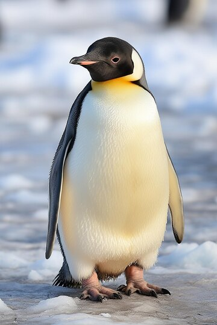
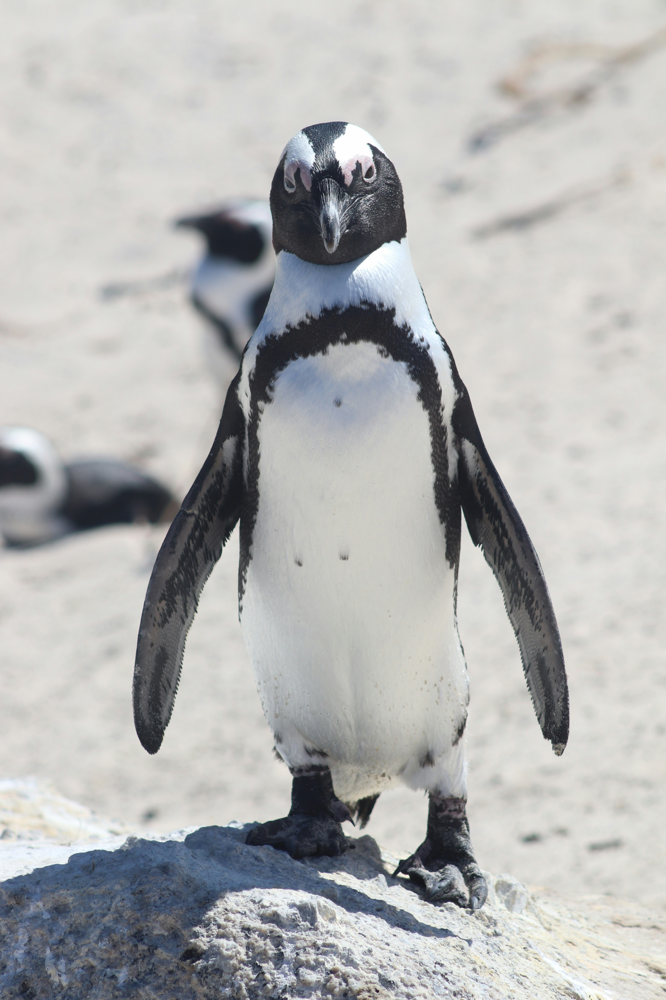
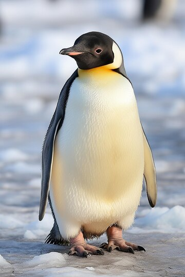
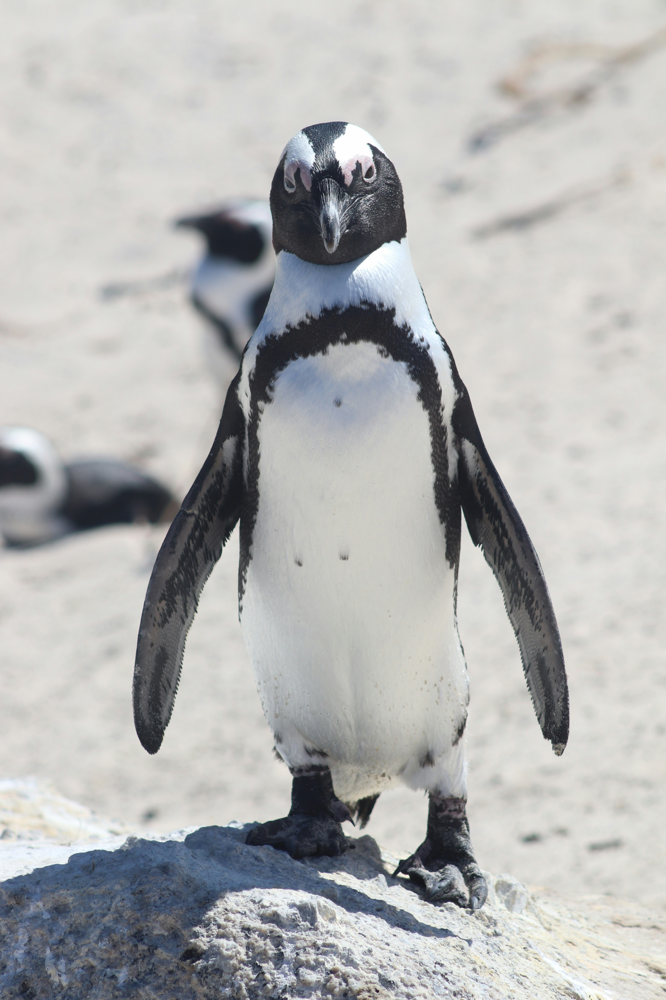

Le pingouin est un oiseau marin de la famille des alcidés, qui se confond souvent avec le manchot. Mais à la différence de ce dernier, le pingouin peut réellement voler. Cependant, le petit pingouin est la seule espèce encore vivante. Il existait une autre espèce de pingouin qui s’est éteinte en 1844 : le grand pingouin. L’animal possède un ventre de couleur blanche et un bec tout noir. On le reconnaît aussi par son dos trapu. Le pingouin possède des pattes palmées noires. Il mesure environ 40 cm et ne pèse entre 500 et 750 grammes. Ce petit oiseau a une démarche assez maladroite. En outre, le pingouin dispose d'ailes qui lui permettent de nager et voler. Sa tête et son dos sont de couleur noire, tout comme sa queue, pointue et assez petite.
Souvent confondu et pourtant les pingouins et les manchots sont très différents
La biologie des pingouins est remarquablement adaptée à leur vie dans les environnements marins et souvent extrêmes des régions polaires et subantarctiques. Voici un aperçu de certaines des caractéristiques biologiques fascinantes de ces oiseaux emblématiques :
En somme, la biologie des pingouins est une étude fascinante de l'adaptation à des environnements extrêmes, de la reproduction synchronisée avec les cycles naturels, et de la vie sociale et comportementale complexe dans les colonies. Ces oiseaux emblématiques continuent d'inspirer l'admiration et la curiosité, tout en rappelant l'importance de préserver leurs habitats uniques et fragiles.
Les pingouins évoluent dans des habitats marins et subantarctiques, jouant un rôle crucial dans les écosystèmes. Voici quelques aspects de leur écologie :
Rôle dans la chaîne alimentaire : Les pingouins sont des maillons importants de la chaîne alimentaire, régulant les populations de proies et maintenant l'équilibre des écosystèmes marins.
Impact sur les populations : Leur reproduction en colonies massives peut influencer les populations de proies locales et la disponibilité des ressources alimentaires.
Interactions avec d'autres espèces : Les pingouins interagissent avec diverses espèces marines, influençant ainsi la répartition et l'abondance des autres espèces.
Impact des activités humaines : Les activités humaines telles que la pêche, le tourisme et la pollution menacent les populations de pingouins et leurs habitats.
Conservation : Pour assurer la survie des pingouins, il est crucial de protéger leurs habitats, de réduire les pressions humaines et de sensibiliser à leur conservation.
En conclusion, l'écologie des pingouins est complexe et interconnectée avec les écosystèmes marins. Protéger ces oiseaux emblématiques nécessite une compréhension approfondie de leur environnement et des mesures de conservation efficaces.
Les pingouins ont des habitudes alimentaires adaptées à leur vie marine. Voici un aperçu de leurs régimes alimentaires :
Principales proies : Ils se nourrissent principalement de poissons, de krill et de calmars.
Techniques de chasse : Les pingouins utilisent diverses techniques de chasse, plongeant profondément pour capturer leurs proies.
Plongées et durée de chasse : La durée et la profondeur des plongées varient en fonction de l'espèce et de la disponibilité des proies.
Nourrissage des jeunes : Pendant la saison de reproduction, les parents alternent entre la chasse et l'alimentation des poussins.
Adaptations à l'environnement : Les habitudes alimentaires des pingouins sont adaptées à leur vie dans des environnements marins, où ils jouent un rôle crucial dans les écosystèmes.
En résumé, les pingouins sont des prédateurs spécialisés qui contribuent à maintenir l'équilibre des écosystèmes marins.
Les pingouins habitent principalement dans les régions côtières et les îles de l'Antarctique et des zones subantarctiques. Voici quelques aspects de leurs habitats :
Régions côtières et îles : Les pingouins se rassemblent souvent sur des falaises, des plages de sable ou des banquises pour se reproduire.
Choix de sites de nidification : Ils sélectionnent des endroits stratégiques, comme la glace de mer ou les îles rocheuses, pour construire leurs nids à l'abri des prédateurs.
Importance de la banquise : La banquise offre un accès facile à la nourriture, car les eaux froides regorgent de proies marines.
Adaptations aux conditions : Les pingouins sont parfaitement adaptés à la vie marine, même dans des conditions extrêmes.
En résumé, les habitats des pingouins offrent un aperçu unique de la diversité de la vie marine, soulignant l'importance de protéger ces environnements fragiles.
Les pingouins sont confrontés à plusieurs défis qui menacent leur survie et celle de leurs habitats. Voici un aperçu de ces menaces :
Changement climatique : Le réchauffement climatique entraîne la fonte des glaces de mer et des banquises, perturbant ainsi les lieux de reproduction des pingouins et diminuant la disponibilité de leurs proies marines. Ces changements peuvent également provoquer des événements météorologiques extrêmes, comme des tempêtes, endommageant les nids et affectant les populations de pingouins.
Perturbations des habitats : Les activités humaines telles que l'exploitation minière, le forage pétrolier, la pêche commerciale et le tourisme peuvent dégrader les habitats des pingouins. Les déversements d'hydrocarbures, la pollution plastique et les déchets humains sur les plages peuvent aussi contaminer les zones de nidification et les sources de nourriture des pingouins.
Surpêche : La surpêche commerciale réduit les populations de poissons et de krill, principales proies des pingouins. La diminution des ressources alimentaires entraîne une compétition accrue pour la nourriture entre les pingouins et d'autres prédateurs marins, mettant en danger la survie des populations de pingouins.
Prédation : Les pingouins sont la proie de prédateurs terrestres et marins, tels que les goélands, les pétrels, les phoques et les orques. L'augmentation des populations de prédateurs introduits, comme les rats et les chats, dans les zones de nidification peut également menacer les populations de pingouins en perturbant leurs sites de nidification et en prélevant des œufs et des poussins.
Maladies et parasites : Les maladies et les parasites peuvent également menacer les populations de pingouins. Par exemple, la malaria aviaire et le virus de la variole aviaire ont été signalés chez certaines espèces de pingouins, tandis que les parasites externes tels que les poux peuvent causer des problèmes de santé et de reproduction chez les oiseaux infectés.
En résumé, les pingouins sont confrontés à une série de défis, à la fois naturels et causés par l'homme, qui mettent en péril leur survie et celle de leurs habitats. La conservation des pingouins nécessite des mesures de protection des habitats, la réduction des activités humaines nuisibles et une sensibilisation accrue à l'importance de préserver ces oiseaux emblématiques et les écosystèmes marins qu'ils habitent.